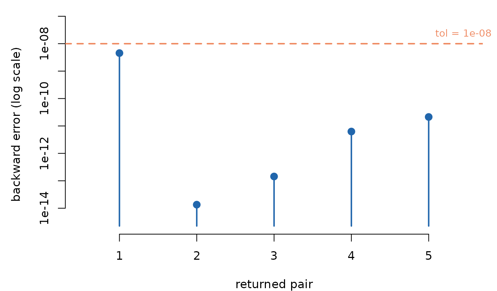
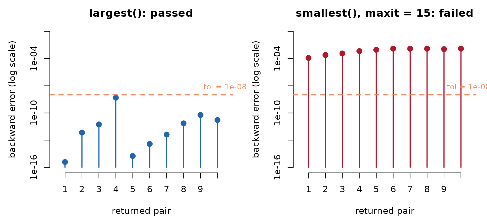
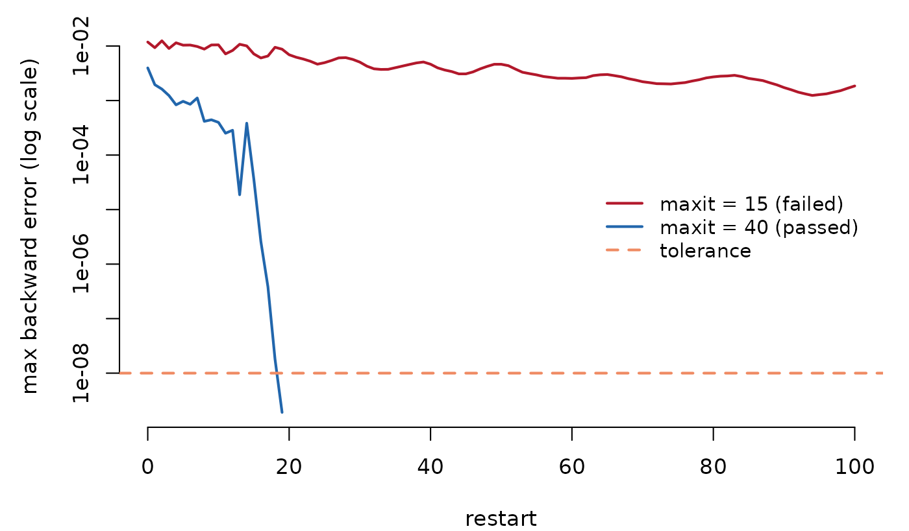

Every result returned by eigencore carries a
certificate: a compact record of the residual,
backward-error scale, orthogonality check, and tolerance used for that
result. The certificate lets you inspect those checks without
recomputing the residual. It does not certify spectral ordering or any
property that its certificate_type does not name.
This vignette walks through the certificate’s fields, the three things they measure, and what to do when one of them fails.
Anatomy of a certificate
set.seed(1)
n <- 200
A <- crossprod(matrix(rnorm(n * n), n, n)) / n + diag(n)
fit <- eig_partial(A, k = 5, target = largest())
cert <- fit$certificate
cert
#> eigencore certificate
#> passed: TRUE
#> tolerance: 1e-08
#> type: residual_backward_error
#> norm bound: frobenius_exact+identity_exact
#> scale estimated: FALSE
#> max residual: 1.67046e-07
#> max backward error: 4.546939e-09
#> max orthogonality loss: 1.776357e-15
#> orthogonality tolerance: 1.490116e-08
#> orthogonality required: TRUEThe fields you act on, in order:
-
passed— overall verdict.TRUEmeans every returned pair satisfies the checks required by this certificate type and the norm bound used to build the scale is exact, not estimated. -
tolerance— the user-requested tolerance. Defaults to1e-8. -
max_residual— the worst absolute residual||A v - lambda v||(or||A v - lambda B v||for generalized problems) across the returned basis. -
max_backward_error— the worst residual divided by the labelled scale. This is the number that has to be belowtolerancefor a pair to be considered converged. -
max_orthogonality_loss— the worst entry of|V* V - I|(or|V* B V - I|in B-inner-product problems). -
failed_indices— which pairs failed. Empty whenpassed = TRUE.
Two more fields explain how the verdict was reached rather
than what it is: norm_bound_type names the scale used to
compute backward error, and scale_is_estimate flags when
that scale is itself a stochastic estimate rather than an exact bound —
the “Withheld” section below shows exactly what that means for
passed. certificate_type and
notes carry provenance text for unusual states.
?certificate documents every field.
The max_* fields are summaries. The certificate also
keeps the underlying per-pair vectors
(cert$backward_error, cert$converged), so you
can see at a glance whether the whole basis cleared the bar or just
barely missed:

Per-pair backward error for the five returned eigenpairs. The
max_backward_error field is simply the height of the
tallest stem; passed is TRUE because every stem clears the
tolerance line.
Three things a certificate measures
1. Residual
For a Hermitian eigenproblem A v = lambda v, the
absolute residual is ||A v_i - lambda_i v_i||. For
an SVD, both the left and right relations matter, so the combined
residual is
sqrt( ||A v - sigma u||^2 + ||A^T u - sigma v||^2 ).
For a generalized SPD problem A v = lambda B v, the
residual is computed in the original coordinates:
||A v_i - lambda_i B v_i||. Eigencore never reports a
residual computed in a transformed problem space without saying so in
certificate_type.
2. Backward error
Absolute residuals can be misleading when the operator’s norm is
large or small. Backward error is the residual divided by a scale that
captures “how big could a perturbation of A (and
B) be that exactly makes (lambda, v)
an eigenpair?”:
eta_i = ||r_i|| / ( (||A|| + |lambda_i| ||B||) ||v_i|| ).
A pair “converges” when eta_i <= tol. This is the
criterion eigencore uses internally; the tolerance you pass to
eig_partial(tol = ...) is the backward-error tolerance, not
the residual tolerance.
3. Orthogonality
Iterative methods drift. After enough restarts the returned basis can
lose orthogonality even when each per-pair residual is small. The
certificate records max_abs(V* V - I) (or
max_abs(V* B V - I)); its acceptance tolerance is
max(tol, sqrt(eps)). A passing residual should be
interpreted alongside the orthogonality field. If orthogonality loss
exceeds its tolerance, clustered or repeated eigenvalues may be
represented by nearly duplicate vectors even when individual residuals
are small.
A certificate evaluates the pairs the solver returned. It does not prove that those pairs are the requested largest, smallest, or nearest eigenvalues. When target identity is consequential, inspect the method and target in the plan and compare against an independent oracle on a tractable instance.
Reading common certificate states
The single most useful habit is to picture the per-pair backward
error against the tolerance line. A passing certificate is “all stems
below the line”; a failing one is “at least one stem above it.” Here are
the same ten eigenpairs of A, computed two ways:
# Largest eigenvalues are well separated -> easy, converges fast.
fit_pass <- eig_partial(A, k = 10, target = largest())
# Smallest eigenvalues are densely clustered near 1 -> a tight maxit
# budget leaves them short of tolerance.
fit_fail <- eig_partial(A, k = 10, target = smallest(), maxit = 15)
c(largest_passed = fit_pass$certificate$passed,
smallest_passed = fit_fail$certificate$passed)
#> largest_passed smallest_passed
#> TRUE FALSE
Same matrix, same k, two targets. Left: the ten largest eigenpairs all clear the tolerance (blue, passed). Right: the ten smallest stall above it under a tight iteration budget (red, failed).
Clean: every box ticked
fit_pass$certificate$passed
#> [1] TRUE
fit_pass$certificate$norm_bound_type
#> [1] "frobenius_exact+identity_exact"
fit_pass$certificate$scale_is_estimate
#> [1] FALSEThis is the easy case. Every residual is below tolerance, orthogonality is near machine precision, and the norm bound used to scale the backward error is the exact Frobenius norm — no stochastic component.
Failed: residual too large
The right-hand panel above is a genuine failure. The smallest
eigenvalues of A sit in a dense cluster just above 1, so
they need many more iterations than the well-separated largest ones.
With maxit = 15 the solver runs out of budget before any
pair converges, and the verdict flips. The failed_indices
slot tells you which Ritz pairs missed:
fit_fail$certificate$passed
#> [1] FALSE
fit_fail$certificate$failed_indices
#> [1] 1 2 3 4 5 6 7 8 9 10
fit_fail$certificate$max_backward_error
#> [1] 0.001240683You do not have to guess how far off it was, or whether it was
inching toward convergence. The solver records a
convergence_history; plotting the worst backward error per
restart shows the failed run plateauing above the line while a generous
budget drives it underneath.
fit_ok <- eig_partial(A, k = 10, target = smallest(), maxit = 40)
fit_ok$certificate$passed
#> [1] TRUE
Worst backward error per restart for the ten smallest eigenpairs. A tight budget (red) stalls above the tolerance; a generous one (blue) drives the error under the line and the certificate passes.
What to do: increase maxit, raise tol, or —
when you suspect a clustered spectrum — request a larger k
(so the cluster is fully covered by the returned basis) and slice
afterwards. Here, lifting maxit from 15 to 40 is
enough.
Estimated scale: passed remains false
norm_bound_type names what the certificate used as the
scale in the backward-error ratio. The common values identify exact,
metadata-derived, and estimated scales:
-
frobenius_exact— the Frobenius norm of an explicit dense matrix. -
frobenius_metadata— exact Frobenius norm derived from sparse/diagonal metadata. -
identity_exact— the standard problemB = I. -
frobenius_hutchinson_estimate— a stochastic Hutchinson estimate, used for matrix-free operators that do not expose a norm.
A matrix-free operator (one wrapped via
linear_operator() with no exact norm metadata) forces
eigencore onto that last, stochastic estimate of ||A||.
Because the denominator of the backward-error ratio is then a
sample, not a deterministic upper bound, the certificate sets
passed = FALSE even if every sampled residual ratio is
below tol. scale_is_estimate records why:
set.seed(2)
op <- linear_operator(
dim = c(n, n),
apply = function(X, alpha = 1, beta = 0, Y = NULL) {
Z <- alpha * (A %*% X)
if (is.null(Y) || beta == 0) Z else Z + beta * Y
},
apply_adjoint = function(X, alpha = 1, beta = 0, Y = NULL) {
Z <- alpha * (A %*% X)
if (is.null(Y) || beta == 0) Z else Z + beta * Y
},
structure = hermitian(),
name = "matrix-free Hermitian wrapper"
)
fit_mf <- eig_partial(op, k = 5, target = largest())
fit_mf$certificate$norm_bound_type
#> [1] "frobenius_hutchinson_estimate+identity_exact"
fit_mf$certificate$scale_is_estimate
#> [1] TRUE
fit_mf$certificate$passed
#> [1] FALSE
fit_mf$certificate$notes
#> [1] "certificate scale uses a stochastic norm estimate; passed is withheld"eigencore does not have a deterministic Frobenius bound for this
operator without paying for a full second pass over the matrix, so it
uses a Hutchinson stochastic estimate. The result therefore reports
scale_is_estimate = TRUE and keeps
passed = FALSE, even when the sampled residual ratios are
below the requested tolerance.
What to do: if you need a hard passed = TRUE, switch to
a problem class where eigencore can carry exact norm metadata (built-in
dense / dgCMatrix / ddiMatrix operators), or
refine with a deterministic verification pass.
Generalized SPD: B-orthogonality matters
For A v = lambda B v, the certificate’s orthogonality
field is in the B-inner product:
max_abs(V* B V - I). For this certificate type,
passed = TRUE requires both the residual threshold and
B-orthogonality of the returned vectors.
set.seed(4)
B <- diag(seq(1, 5, length.out = n))
fit_gen <- eig_partial(A, k = 5, target = largest(), B = B,
method = lobpcg(maxit = 200))
fit_gen$certificate$norm_bound_type
#> [1] "frobenius_exact+frobenius_exact"
fit_gen$certificate$max_orthogonality_loss
#> [1] 8.881784e-16
fit_gen$certificate$passed
#> [1] TRUEIf a B-orthogonality value comes back near machine precision, the
B-inner-product Cholesky-QR refinement inside the solver did its job. If
it comes back loose (say, 1e-4), increase
maxit or lower tol — orthogonality loss is
usually the first thing to surface in ill-conditioned-B problems.
Comparing eigencore certificates to RSpectra diagnostics
RSpectra::eigs_sym() returns nconv and
niter but does not return residuals, backward errors, or an
orthogonality measure. The eigencore shim
(eigencore::eigs_sym()) returns the same RSpectra-shaped
list with two added fields:
res <- eigs_sym(A, k = 5, which = "LA")
names(res)
#> [1] "values" "vectors" "nconv" "niter" "nops"
#> [6] "certificate" "diagnostics"
res$certificate
#> eigencore certificate
#> passed: TRUE
#> tolerance: 1e-08
#> type: residual_backward_error
#> norm bound: frobenius_exact+identity_exact
#> scale estimated: FALSE
#> max residual: 2.683414e-08
#> max backward error: 7.304167e-10
#> max orthogonality loss: 2.664535e-15
#> orthogonality tolerance: 1.490116e-08
#> orthogonality required: TRUECode already written against RSpectra::eigs_sym()
ignores certificate and diagnostics silently;
new code can opt in to certified results without changing call
sites.
Cheat sheet
| You see | What it means | What to do |
|---|---|---|
passed = TRUE,
scale_is_estimate = FALSE
|
All checks required by this certificate type passed with an exact scale. | Use the values/vectors within the stated certificate scope. |
passed = FALSE, scale_is_estimate = FALSE,
failed_indices non-empty |
Some pairs hit maxit before converging. |
Increase maxit, raise tol, or request a
wider k. |
passed = FALSE,
scale_is_estimate = TRUE
|
The backward-error scale is stochastic, so the certificate does not report a pass. | Use a problem class with deterministic norm metadata, or run a verification pass. |
max_orthogonality_loss near sqrt(eps) but
residuals tiny |
Iterative drift; clustered eigenvalues at risk of duplicates. | Increase maxit; check whether there are repeated
eigenvalues. |
failed_indices includes the first returned pairs |
Some leading returned pairs exceed the tolerance. | Inspect convergence_history; increase
maxit if the errors are still declining. |
failed_indices includes the last returned pairs |
Some trailing returned pairs exceed the tolerance. | Inspect the spectral gap; a wider k may help when the
target boundary cuts through a cluster. |
The certificate records which numerical checks were run, the scale used for each backward error, and whether those checks passed. Use those fields together with the solver plan and the requirements of your downstream analysis.
Where to go next
-
vignette("sparse-pca")shows a realistic withheld certificate in context — centering a sparse matrix trades an exact norm bound for a stochastic one unless you supply metadata yourself. -
vignette("eigencore")andvignette("generalized-eigenproblems")cover the workflows that produce the certificates read here.